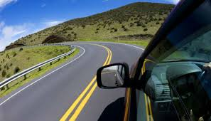

biografia sobre mi
mi nombre es susana elizabeth soforo medrano, naci el 18 de abril del 2006 y soy de CD.juarez, soy la menor de mis 2 hermanos.

desde muy pequeña me han cambiado de muchas escuelas por el trabajo de mi papa, por lo que no me acuerdo donde estudie mi kinder, estudie 3ro y 4to de primaria en zacatecas, 5to en juarez
y 6to en queretaro, la secundaria la estudie en queretaro.
Por el hecho de que viajaba mucho se me quito el gusto de viajar, me pone de mal humor estar en lugares que no conosco y mas cuando hay demaciadas personas
Datos relevantes
- tengo mejor comunicacion con mis hermanos, mas con mi hermana ya que es la que mas me entiende y con la que mas comoda me siento para hablar
- mis papas antes de que yo naciera tuvieron demaciados perros, mi papa le encanta las mascotas, por lo que mis hermanos y yo agarramos ese gusto hacia los animales
- de entre mis papas, se podria decir que mi mama es la que mas facil puede llorar pero no es muy comun que llore, pero mis hermanos y yo no, los 3 somos muy chillones mas mi
hermana y yo
- casi nunca festejo mi cumpleaños pero un regalo que hasta la fecha me ha durado son unos audifonos de diadema